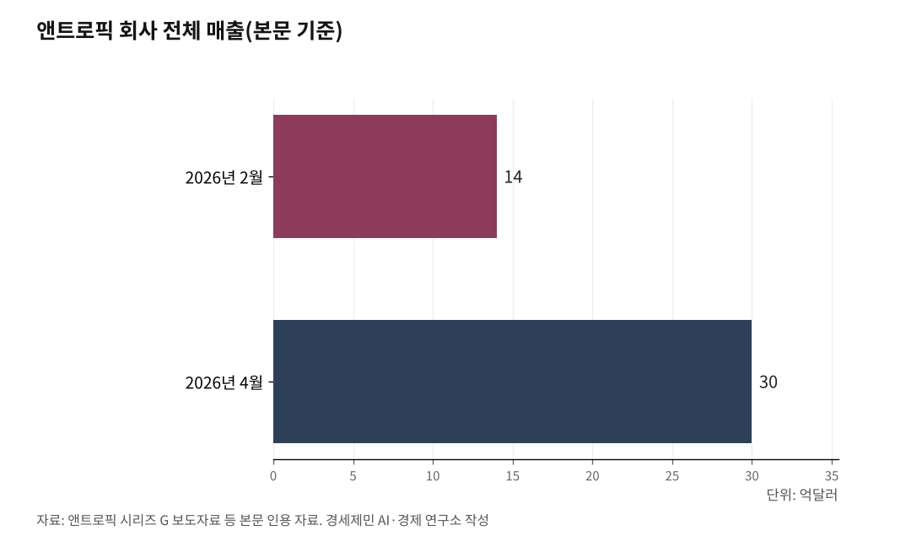

[포스트 미토스 AI ⑤] AGI 도래, 사장과 AI만 있으면 1인 기업 '폭발'
바이브 코딩과 에이전트가 여는 1인 기업 혁명
위임에도 선이 있다 - 임계점과 책임
본 편이 다루는 자율 에이전트는 일반 공개된 클로드 오퍼스 4.7과 코워크, 매니지드 에이전트다. 사이버 보안 특화 모델 미토스는 공개와 동시에 일반 접근이 차단됐다([포스트 미토스 AI ①] 참조).

통계청 국가통계포털(KOSIS)을 보면 한국 자영업자는 2025년 4월 기준 561만5000명이고, 그 가운데 74.7%가 직원 없이 혼자 일하는 1인 사업체다. 이 흐름이 그 한가운데로 들어오고 있다.
1. 알려줘에서 해줘로 - 위임의 시대
다리오 아모데이 앤트로픽 최고경영자는 2024년 11월 "2026년이나 2027년 인간 수준 인공지능(AGI) 도래 가능"이라고 밝혔고, 2026년 1월 다보스 세계경제포럼에서 "올해 초급과 인턴십 일자리 감소가 시작된다"고 경고했다. 샘 올트먼 오픈에이아이 최고경영자도 2025년 1월 글에서 "2025년 최초의 인공지능 에이전트가 업무에 투입된다"고 밝혔다.
이전 세대 인공지능은 사람이 묻고 인공지능이 답하는 구조였다. 지금 자율 에이전트는 사람이 한 줄을 말하면 인공지능이 알아서 일을 끝낸다.
앤트로픽이 2026년 3월 24일 자체 엔지니어링 블로그에 공개한 실험을 보면, 클로드 오퍼스 4.6 모델이 한 줄짜리 지시만 받고 4시간 동안 혼자 코딩해 브라우저 기반 디지털 오디오 작업대(DAW) 앱을 완성했다. 비용은 124달러였다.
같은 자료에서 회사는 자율 에이전트 장시간 작업의 두 한계를 짚었다. 하나는 맥락 창이 차면서 일관성이 흔들리는 "맥락 불안"이고, 다른 하나는 한계에 가까워지면 작업을 조기에 마치려는 경향이다.
해법은 한 에이전트가 만들고 다른 에이전트가 비판하는 다중 에이전트 틀이다. 124달러는 한 사람 하루치 인건비 수준이다.

2. 바이브 코딩 - 코딩 몰라도 앱을 만드는 방법
자율 에이전트는 코딩을 모르는 사람도 앱을 만들게 했다. 미국 컴퓨터 과학자 앤드레이 카파시(Andrej Karpathy, 오픈에이아이 공동 창립자)가 2025년 2월 자기 누리 소통망 글에서 "바이브 코딩(Vibe coding)"이라는 용어를 만들었다. 사람이 자연어로 만들고 싶은 앱 분위기와 기능을 설명하면 인공지능이 코드를 짜서 작동시키는 방식이다.
앤트로픽은 2026년 1월 12일 비개발자용 에이전트 코워크(Cowork)를 공개했다. 회사가 출시 자료에서 든 사례는 "영수증 사진이 담긴 폴더에서 비용 보고서 자동 작성"이다. 기존 사용자들은 미디어 파일 관리, 사회관계망 게시물 분석, 대화 기록 분석에도 활용해 왔다고 회사는 밝혔다.
기업용 시장에서도 자율 에이전트는 빠르게 번지고 있다. 앤트로픽이 2026년 2월 12일 공개한 시리즈 G 보도자료를 보면 개발자 에이전트 클로드 코드 연환산 반복 매출이 25억 달러를 넘어섰다. 회사 전체 매출은 같은 시점 14억 달러였다가 2026년 4월 30억 달러로 늘었다.
같은 회사는 2026년 4월 8일 매니지드 에이전트(Managed Agents)를 공개했다. 회사 자체 자료를 보면 기존에 수개월 걸리던 에이전트 개발이 수일로 줄었다. 미국 매체 「테크42」 2026년 4월 보도를 보면 실행 시간당 8센트 수준의 종량 과금 구조다. 노션과 일본 라쿠텐이 매니지드 에이전트를 실서비스에 적용했다.
3. 1인이 팀이 되는 구조 - 병렬 작업과 부서별 위임
자율 에이전트 한 개가 사람 한 명 자리를 채우는 데 그치지 않는다. 여러 에이전트를 동시에 돌려 부서별 일을 나누는 길도 열렸다.
앤트로픽은 2026년 2월 5일 클로드 오퍼스 4.6 발표 자료에서 클로드 코드에 "에이전트 팀"을 연구 미리보기로 추가했다. 여러 인공지능이 병렬로 협업한다.
같은 회사는 2026년 4월 16일 클로드 오퍼스 4.7도 일반 공개했다. 일반 공개되지 않은 미토스와 별개 라인업이다. 디일렉과 이데일리 2026년 4월 16일 보도를 보면 이 모델은 자율 코딩 평가 SWE-벤치 프로(SWE-bench Pro)에서 64.3%를 기록해 경쟁 모델인 오픈에이아이 GPT-5.4(57.7%), 구글 제미나이 3.1 프로(54.2%)를 앞질렀다.
오픈에이아이도 같은 흐름에 가세했다. 미국 매체 「테크42」 2026년 4월 보도에 따르면 오픈에이아이는 2026년 4월 22일 챗지피티(ChatGPT)에 "워크스페이스 에이전트(Workspace Agents)"를 추가했다. 팀이 한 번 설정해 두면 담당자가 자리를 비워도 인공지능이 업무를 이어받는다.
한국 노동시장에서도 도입은 빠르다. 한국딥러닝이 2026년 2월 분석한 자료를 보면, 한국은행 「인공지능 활용 실태 조사」에서 한국 노동자 63.5%가 생성형 인공지능 사용 경험이 있고 업무 목적 사용은 51.8%다.
같은 분석은 공공·기업 문서 90% 이상이 인공지능이 읽지 못하는 비정형 자료로 남아 있다고 짚었다. 안드리슨호로위츠(a16z) 보고서와 국내 설문을 종합한 결과 한국 기업 약 85%가 생성형 인공지능을 도입했거나 도입 중이라고도 제시했다.
도구는 빨리 들어왔는데, 받아갈 일은 정리되어 있지 않다는 격차가 같이 와 있다.
4. 임계점과 책임 - 무제한 위임의 위험
위임에는 선이 있다. 자율성이 커진 만큼 위험도 커졌다.
앤트로픽은 코워크 출시 자료에서 직접 "사용자 개입 없이 여러 작업을 연속 수행하도록 설계된 만큼, 모호하거나 상충하는 지시를 내리면 파일 삭제나 프롬프트 인젝션과 같은 위험이 발생할 수 있다"고 밝혔다. 같은 회사는 2026년 3월 24일 클로드 코드에 오토 모드(Auto Mode)를 도입했다. 위험도가 낮은 작업은 에이전트가 처리하고 높은 작업만 사용자에게 묻는 단계적 권한 모형이다.
자율 에이전트가 잘못 처리한 결과의 책임은 정해지지 않았다. 사용자인가, 에이전트를 만든 회사인가, 에이전트를 끼운 중간 회사인가. 자율성이 커진 위임은 기술 문제만이 아니라 책임 문제다. 자율 에이전트가 채운 자리에는 책임 약관이 새로 들어서야 한다.
5. 한국 자영업자 561만 명, 새 동료를 들이는 길
자영업자 4명 가운데 3명은 직원 없이 혼자 일한다. 한 사람이 회계, 재고, 광고, 고객 응대를 모두 떠안는다.
자영업자 환경은 만만치 않다. 한국경제인협회가 2025년 9월 발표한 자영업자 설문조사를 보면 응답자 평균 대출액은 1억 360만 원, 월 이자 부담액은 81만 원, 연이자율은 9.4%다.
한국기독교사회문제연구원 「넘버즈」 289호(2025.5.)는 한국은행 자료를 인용해 자영업자 1인당 평균 대출 잔액이 2024년 말 기준 3억 4000만 원이라고 밝혔다. 두 수치 차이는 한경협이 설문 응답이고 한은 자료가 합산 잔액이라서다.
같은 자료에 따르면 창업 후 5년 내 폐업률은 2023년 기준 60%다. 2025년 상반기 매출이 전년보다 늘었다고 답한 자영업자는 23.2%다.
이런 환경에서 자율 에이전트는 새 의미다. 앤트로픽이 코워크 출시 자료에서 든 "영수증 사진 폴더에서 비용 보고서 자동 작성"은 자영업자가 본업 외에 떠안던 회계 정리 시간을 줄인다. 사람 한 명 더 쓰는 비용이 월 81만 원 이자 너머에 있는 자영업자에게는 자율 에이전트가 직원 한 명을 들이는 효과에 가깝다.
본업은 사람이 하고, 회계·재고·고객 응대는 자율 에이전트에 위임한다. 노션과 라쿠텐이 매니지드 에이전트를 실서비스에 적용한 흐름이 한국 자영업 현장으로 어떤 속도로 내려올지가 다음 분기 변수다.
이 흐름은 본 책 제3부 10장 19편 「사라질 직업과 유망 직종」, 제5부 22장 51편 「팀 협업 자동화」와 맞물려 있다. AGI 도래는 자영업자 발 앞에 와 있다.
참고문헌
· Prithvi Rajasekaran, "Designing Agent Harnesses for Long-Horizon Autonomous App Development", Anthropic Engineering Blog, 2026.3., https://www.anthropic.com/engineering/harness-design-long-running-apps
· "Anthropic raises $30 billion Series G funding at $380 billion post-money valuation", Anthropic 보도자료, 2026.2.12., https://www.anthropic.com/news/anthropic-raises-30-billion-series-g-funding-380-billion-post-money-valuation
· "Anthropic Designs Three-Agent Harness Supports Long-Running Full-Stack AI Development", InfoQ, 2026.4., https://www.infoq.com/news/2026/04/anthropic-three-agent-harness-ai/
· 박찬, 「앤트로픽, PC 파일 직접 관리하는 에이전트 '코워크' 출시」, AI타임스, 2026.1.13., https://www.aitimes.com/news/articleView.html?idxno=205554
· 「앤트로픽, 롱 컨텍스트·에이전트 협업 강화한 '클로드 오퍼스 4.6' 출시」, AI타임스, 2026.2.6., https://www.aitimes.com/news/articleView.html?idxno=206477
· 「앤트로픽, 에이전트 개발·배포를 위한 '클로드 매니지드 에이전트' 공개」, AI타임스, 2026.4.9., https://www.aitimes.com/news/articleView.html?idxno=208979
· 「앤트로픽, 스스로 위험 거르는 '오토 모드' 공개」, AI타임스, 2026.3.26., https://www.aitimes.com/news/articleView.html?idxno=208363
· 「앤트로픽 클로드 오퍼스 4.7 출시…강력한 에이전트 코딩 성능 'SOTA급'」, 디일렉, 2026.4.16., https://www.thelec.kr/news/articleView.html?idxno=55228
· 한광범, 「앤트로픽, '클로드 오퍼스 4.7' 출시…"GPT·제미나이 압도"」, 이데일리, 2026.4.16., https://www.edaily.co.kr/News/Read?newsId=01275926645417104
· 「[위클리 AI] 오픈AI, 사흘에 세 방…에이전트·이미지·신모델 동시 공개」, 테크42, 2026.4., https://www.tech42.co.kr
· "Vibe Coding", 위키백과, 2026.3., https://ko.wikipedia.org/wiki/바이브_코딩
· 한국은행 조사국 고용연구팀, 「일상에 스며든 AI, 사람들은 어떻게 활용하고 있을까?」, 한국은행 블로그, 2025.9.5., https://www.bok.or.kr/portal/bbs/B0000347/view.do?nttId=10093428
· 「한국 근로자 63.5%가 AI를 쓰는 시대」, 한국딥러닝 블로그, 2026.2.23., https://www.koreadeep.com/blog/ai-document-structure-issues
· 「경제활동인구조사 - 종사상 지위별 취업자」, 통계청 국가통계포털(KOSIS), 2025.4. 기준
· 「2024년 자영업자 565만 7000명, 고용원 없는 자영업자 422만 5000명」, 통계청 고용동향, 2025.2.5.
· 「자영업자 2025년 상반기 실적과 하반기 전망 설문조사」, 한국경제인협회 보도자료, 2025.9., https://www.fki.or.kr/kor/news/statement_detail.do?bbs_id=00036328
· 「넘버즈 289호 - 한국 자영업자 실태」, 한국기독교사회문제연구원, 2025.5., http://www.mhdata.or.kr/bbs/board.php?bo_table=koreadata&wr_id=341
· 「앤트로픽 CEO, 인간과 유사한 일반인공지능(AGI) '2026년 또는 2027년' 등장 가능」, Benzinga Korea, 2024.11.15., https://kr.benzinga.com/news/usa/othermarkets/
· 「'천재들의 국가 온다'... 550조원 앤트로픽 제국의 설계자: 아모데이」, 더밀크, 2026.1., https://themiilk.com/articles/a2c92664e
· 「샘 알트먼 '올해는 인공지능을 노동인구에 포함시키는 원년이 될 것'」, 르몽드 디플로마티크, 2025.1., https://www.ilemonde.com/news/articleView.html?idxno=20117
· "Enterprise AI Report 2025", Andreessen Horowitz(a16z), 2025.
※ 이 기사는 AI 프로그램 클로드를 활용해 작성했다.
#포스트미토스AI #AGI #앤트로픽 #코워크 #바이브코딩 #1인기업 #자영업자 #매니지드에이전트 #자율에이전트 #오퍼스4.7